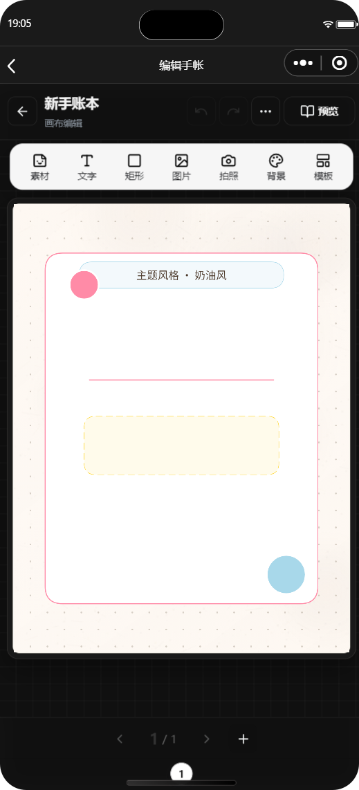
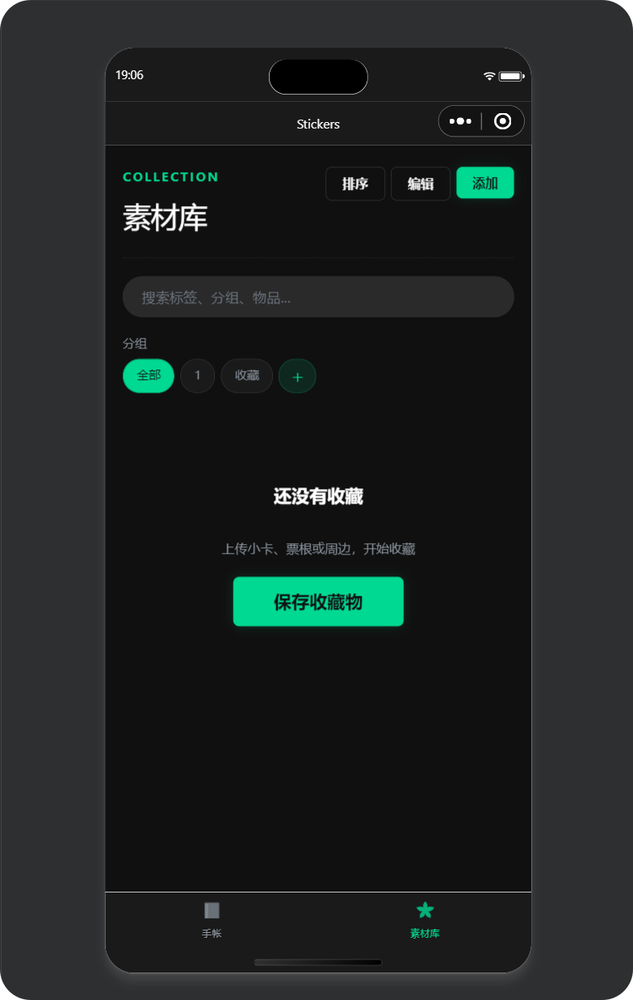
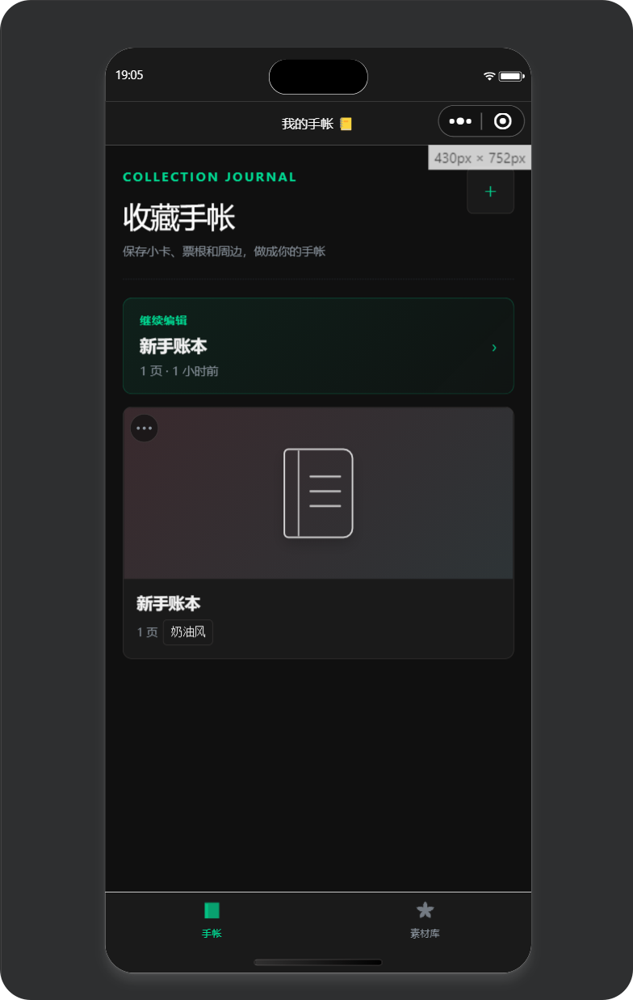

Moonlit Log
偏视觉编辑器的小程序项目，而不是普通表单工具。
月光手帐以“收集实物周边并做成电子手帐”为主流程。用户可以上传或拍摄小卡、票根、冰箱贴等素材，整理进贴纸库，再进入 Canvas 手帐页进行拖拽、缩放、旋转、排版和导出。
微信原生小程序
Canvas 2D
OffscreenCanvas
wx.Storage
AI 标签方案
JS PDF
50最多 50 步撤销重做，每页独立历史。
8+88 种主题与 8 种手帐模板。
500ms防抖自动保存，降低编辑丢失风险。
我负责的部分
- 设计小程序信息架构：首页、编辑器、贴纸库、素材提取、模板选择。
- 实现 Canvas 2D 自绘编辑器的元素渲染、选中态、拖拽缩放、图层顺序和页面保存。
- 规划贴纸库的搜索、分组、收藏、批量上传和一键放入手帐流程。
技术难点
- 在小程序 Canvas 环境中处理不同元素类型的坐标、缩放、旋转与命中检测。
- 用 OffscreenCanvas 缓存纸面材质和图片效果，降低重复渲染成本。
- 图片白边、纸贴、阴影按透明主体轮廓处理，避免变成矩形贴片。
成果亮点
- 形成“收集素材 -> 进入贴纸库 -> 放入手帐 -> 导出”的完整闭环。
- 交互风格从普通工具页升级为暗色电绿色、强识别的编辑器界面。
- 项目文档包含产品升级方案、最小成功案例和备案说明，便于持续迭代。
screens / mini program01-03



点击切换截图